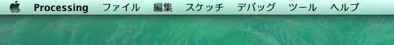
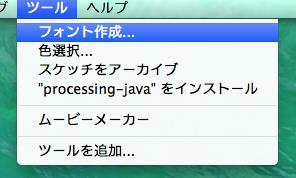
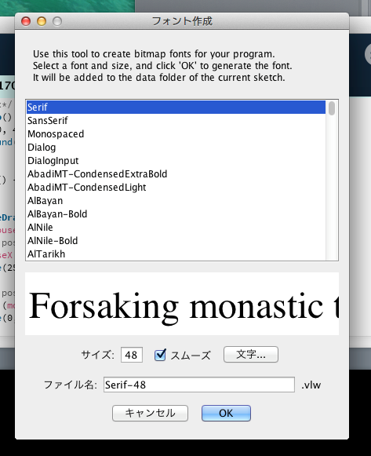

はじめに
機室体験について
ここまでの STEP で、命令・イベント(マウス入力)・条件分岐・キーボード入力を学んできました。色々な種類の命令やイベントを紹介しましたが、 Processing には他にも様々なリファレンス(命令やイベント)があります。新しい変数やイベントを用いたり、それらを組み合わせることで、より複雑な処理をするプログラムを書くことが出来ます。
では早速ですが、ここまで学んできた知識を生かして、以下の問題に挑戦してみてください。新しく追加されている変数やイベントがあるため、それらを確認しながらプログラムを完成させてみましょう。
ここでは、キーボード入力によってキャンバス内に好きな文字を表示するプログラムを作成します。好きな文字を表示させるためには、Font についての知識が必要になります。
まずは、Font ファイルの作成をしましょう。「ツール」タブの「フォント作成」という項目を選んでみてください。以下のような画面が出ると思いますので、画像の通りに進めてください。
まず、Processing のウィンドウを一番前にしてある状態にするとタスクバー(ディスプレイの一番上にあるバー)が以下のようになると思います。
次に、タスクバーの左の方にある「ツール」をクリックすると以下のような選択画面が出ますので、その中の「フォント作成...」をクリックします。
すると、以下のようなウィンドウが出てくると思います。これはフォントの種類に関する一覧です。下にプレビューが表示されるので、気に入るフォントを探してみてください。
作成されたファイル(.vlw)をプログラム内で指定することで、そのフォントを使用することができます。(1)~(3)までのプログラムを書いて、実行してみてください。
/*変数の宣言*/
int x = 0;
int y = 50;
PFont font;
/*イベントの宣言*/
void setup() {
size(400, 400);
background(0, 0, 0);
fill(255, 128); //オブジェクトを塗りつぶす命令
font = loadFont("/*(1)作成したフォントファイル名を入力しよう(.vlw)*/");
textFont(font, 48);
}
void draw() {
}
void keyPressed() {
/*(2)text という命令を用いて、ここで宣言してみよう*/
}
void keyReleased() {
x += 35;
if (/*(3)条件式 A*/) { //文字がキャンバス外に出てしまったとき
x = 0;
y += 50;
}
}
Processing では、二次元モデルだけではなく三次元モデルも作成して動かすことが出来ます。x キー・y キー・z キーを押すことで回転している箱の大きさを変えるプログラムを作成してください。
変数やイベントが多くなってきているので、それぞれがどの役割を果たしているのかしっかりと確認してやると、エラーを減らしながら正確に書くことが出来ます。
/*変数の宣言*/
//それぞれの軸に関して箱を変化させるための変数
int x = 0;
int y = 0;
int z = 0;
//それぞれの軸に関して箱をどのくらいの速度で変化させるか決定する変数
int speedX = 5;
int speedY = 5;
int speedZ = 5;
int angle = 0; //観測する角度を決定する変数
/*イベントの宣言*/
void setup() {
size(400, 400, P3D);
}
void draw() {
background(0, 0, 0);
translate(width/2, height/2); //立体の中心を画面中央に移動
rotateX(radians(angle)); //x 軸について angle 度回転する
//rotateY(radians(angle));
//rotateZ(radians(angle));
box(150+x, 150+y, 150+z);
angle += 3;
if (angle >= 360) angle = 0;
delay(25); //ループを遅らせるための命令、中の数字はミリ秒(1000 = 1 秒)
}
void keyPressed() {
if (/*(1)条件 A*/) {
//(2)x についての処理
}
if (/*(3)条件 B*/) {
//(4)y についての処理
}
if (/*(5)条件 C*/) {
//(6)z についての処理
}
}